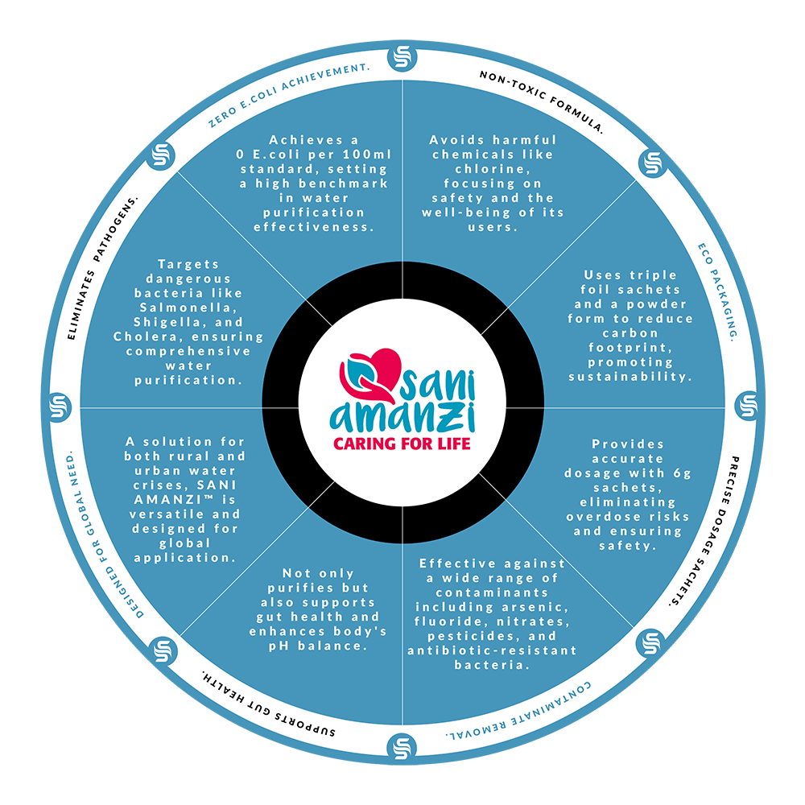
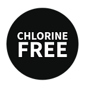
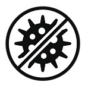
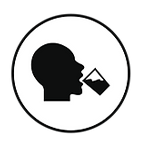
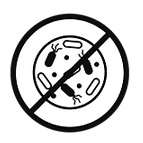
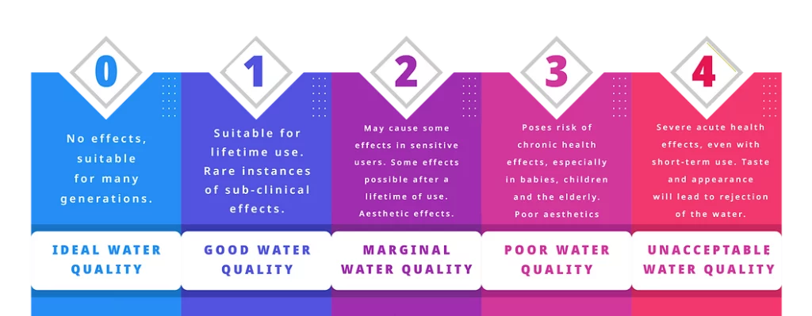
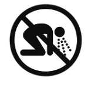
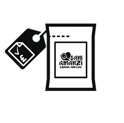
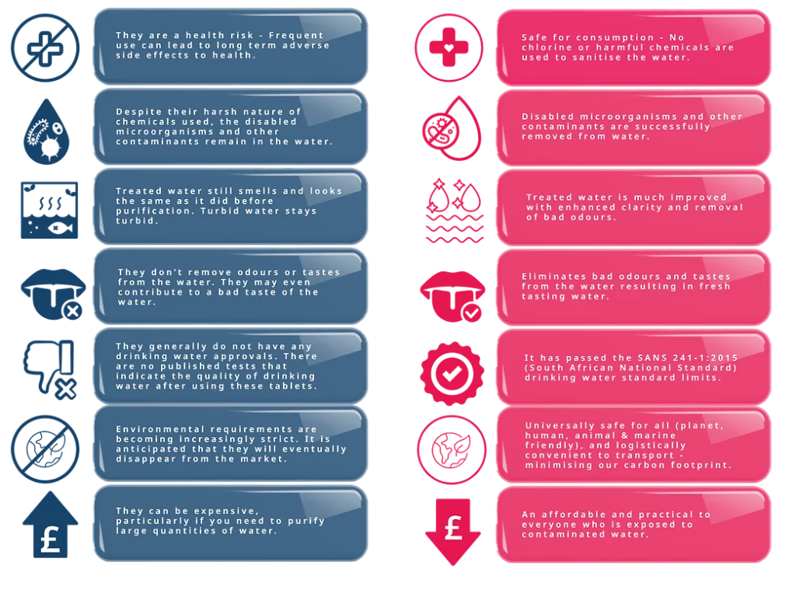

SANI AMANZI™
Water Sanitising
& Purification Solution
Caring for Life
More than 2 billion people are currently trapped in water-stressed countries, while shockingly, a staggering 900 million individuals continue to endure the daily torment of lacking access to clean drinking water. This grim reality signifies that over 1 in every 8 people across the globe is living without this basic necessity.
The gravity of this crisis cannot be overstated. Access to safe drinking water is not a luxury but a fundamental human right, essential for our very survival and well-being. What adds to the shock is the stark fact that contaminated water claims more lives than the combined toll of diseases like Malaria, COVID-19, and AIDS. Contaminated water breeds and spreads deadly diseases like Cholera, Diarrhoea, Dysentery, Hepatitis A, Typhoid, and Polio, leaving a trail of suffering and death in its wake.
In line with the United Nations' declaration that "Everyone has the right to sufficient, continuous, safe, acceptable, physically accessible, and affordable water for personal and domestic use," this ongoing water crisis should serve as a resounding wake-up call. It highlights the urgent need for immediate and concerted action to address this dire global issue.
Introducing SANI AMANZI™, a cutting-edge point-of-use solution that is not only affordable but also highly practical for all those exposed to contaminated water sources. This innovative product effectively eliminates waterborne pathogenic bacteria through a unique blend of safe active ingredients. Developed by a team of experts deeply knowledgeable about the challenges posed by contaminated water, SANI AMANZI™ stands out as the ultimate solution to the clean water crisis. Furthermore, SANI AMANZI™ demonstrates exceptional effectiveness against antibiotic-resistant bacteria and successfully eradicates a wide spectrum of pathogenic microbes. What sets this product apart is its ingenious design, incorporating an inorganic, natural, and non-polluting reagent. SANI AMANZI™ is poised to revolutionise access to clean water and make a significant impact on global health.

Key Features

ChlorineFREE

KillsPATHOGENICBACTERIA

Safe for GradeHUMANCONSUMPTION

Effective againstANTI-BIOTICRESISTANT BACTERIA

FreshTASTINGWATER

1 SachetSANITISES20L OF WATER
Standards & Certifications
Water Quality Classification
SANI AMANZI™ has been tested by accredited SANAS laboratories using the SANS 241-1:2015 Drinking Water Standards and the WRC Domestic Use Standard classification system (*see diagram below).
After vigorous testing of SANI AMANZI™ it was determined that the samples collected and treated displayed physical, chemical and bacteriological qualities that were deemed as fit for use as potable water and for domestic use purposes. The WRC classified SANI AMANZI™ as being of "Good Water Quality" (class one); meaning treated water was suitable for life-time use, with rare instances of sub-clinical effects.
To gain more insight into the WRC Domestic Use Standard classification system please visit www.wrc.org.za.

*The WRC Domestic Use Standard classification system
Ubuntu Life Resources and our partners are always striving to achieve breakthrough discoveries in chemistry, to make effective clarification possible every time. Any Point-of-Use product claiming to be 100% successful in the clarification of water every time, irrespective of pH and other chemistry influences, are misleading and false.
We take great pride in providing our customers with full transparency, and have tested SANI-AMANZI™ on the most contaminated of water sources in South Africa to ensure we meet our efficacy standard goals of eliminating 99.99% of waterborne pathogenic bacteria and this remains our core goal to this very day.
Environmentally Responsible
In recognition of the climate crisis and our responsibility to do all we can to reduce the amount of plastic waste harming our environment, SANI AMANZI™ has been purposefully designed to reduce, and wherever possible, stop plastic bottle contamination.
With our "plastic-free" principle in mind, SANI AMANZI™ has been packaged via powder sachet as an alternative to liquid purifiers on the market. All you need is a sachet of SANI AMANZI™ and water to fill your bucket and you will have a powerful and environmentally friendly water purifier.

66 Trucks
Transportation requirements for 2 million litres of bottled water

1 Truck
Transportation requirements for purifying 40 million litres of water using SANI AMANZI™
We do not only believe in eradicating pathogens but also reducing our carbon footprint. By using a SANI AMANZI™ sachet as an alternative to bottled water or liquid water purifiers this means that less trucks are required for transportation, thus being more friendly on the environment.
Key Characteristics

Triple FoilHIGH QUALITYSACHET

1 Sachet =20 LITRES
Point-of-UsePURIFIER

Precise DosagePREVENTSOVERDOSE

AffordableCOMPETITIVELYPRICED

Powder SolutionLIGHTWEIGHTTO TRANSPORT
Instructions for Use
To treat contaminated water using SANI AMANZI™ mix one 6g powder sachet with 20 litres of water, following the instructions provided below. Ensure you use a clean container and thoroughly stir the powder into the contaminated water. Once treatment is complete, use a clean and tightly woven cloth to filter the water. It is important not to filter the sedimentation that has settled at the bottom of the container.


Do not combine with other disinfectants, sanitisers, acids, or ammonia. Avoid direct contact with anhydrous powder with your eyes, and never ingest it. Refrain from consuming coagulants or precipitates generated during the sanitization process. It's important to note that every water source possesses its unique chemical composition. The pH level of the water plays a pivotal role in the coagulation process. Additionally, factors like particle size, particle density, liquid density, surface charge, and water chemistry exert significant influences on the settling of fine particles.
World's Best Water Purifier?
Chlorine Based Purifiers
SANI AMANZI™ Purifier

Product Range
Please take your time to browse our range of SANI AMANZI™ products. Our catalogue is constantly being updated so please keep an eye on this page and our social media platforms to be sure you stay in the loop with new products and promotions.
Frequently Asked Questions
What is the main function of SANI AMANZI™?
The primary purpose of SANI AMANZI™ is two-fold. Firstly, it effectively eliminates waterborne pathogens that can lead to infectious diseases in humans. Secondly, it facilitates water clarification through a flocculation process.
Why must the water sit for 30 minutes after treatment?
Allowing the treated water to sit for 30 minutes is essential to provide sufficient time for the chemicals in SANI AMANZI™ to effectively neutralise the pathogens present in the water.
Will water always become clear through flocculation with SANI AMANZI™?
No. While we lead in successful water clarity, claims of any product making water clear every time, regardless of pH, are often misleading. We continue to research and develop new formulas to enhance clarity.
How much water can be treated with 1 6g sachet?
One 6g sachet of SANI AMANZI™ is suitable for treating 20 litres of contaminated water, ensuring its safety for consumption.
What influences solids in water not to settle with SANI AMANZI™?
The diverse water sources across South Africa result in varying water chemistries. While water chemistry affects water clarity (flocculation), it does not impact the sanitation process.
Does the clarity of water pose a health risk to people?
Water clarity itself is not a health threat. The presence of waterborne pathogens in clear water, however, can be dangerous. SANI AMANZI™ is designed to eliminate these pathogens.
Is there a chemical taste in the water when using SANI AMANZI™?
In highly contaminated water, SANI AMANZI™ might result in a slight chemical taste. When used in clear tap water without significant contamination, residual chemicals might lead to a mild taste. This taste, while not harmful, indicates the presence of protective agents against waterborne pathogens.
Will SANI AMANZI™ remove sea salt from water?
No, SANI AMANZI™ is not designed to remove sea salt from water.
Who is SANI-AMANZI™ intended for?
SANI AMANZI™ serves as a Point-of-Use (POU) solution for governments, NGOs, and concerned companies dedicated to providing safe drinking water for all individuals.
Disaster Response & Government Readiness
In situations such as flooding, infrastructure failure, drought, contamination events, humanitarian emergencies and municipal water interruptions, SANI AMANZI™ provides an immediate portable solution to support safer drinking water access at household and community level.
Its lightweight sachet format allows:
- rapid transportation
- simplified storage
- scalable deployment
- emergency reserve stock
- fast humanitarian distribution
Strategic Water Preparedness
From a public health and emergency response perspective, maintaining reserve stock levels supports rapid deployment during water crises.
Ubuntu Life Resources supports engagement with:
- governments
- NGOs
- disaster response organisations
- humanitarian programs
- institutional buyers
- distribution partners
Registered Associations
Partner With Ubuntu Life Resources
We support scalable clean water initiatives across Africa and developing regions through practical water purification solutions designed for real-world deployment.
Contact us
sanchia@ubuntuliferesources.co.za
079 658 8189
LinkedIn — Sanchia-Lynn Smit
Sanchia-Lynn Smit
CEO / Founder, Ubuntu Life Resources